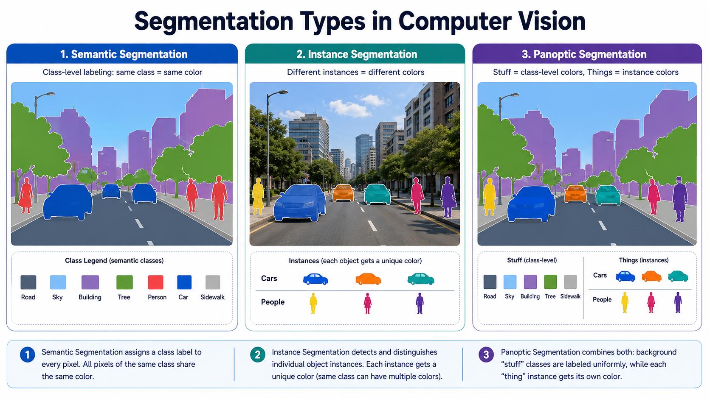

Instance Segmentation Definition
Instance segmentation combines object localization, class prediction, and pixel-level mask estimation. Instead of assigning one class label to every pixel, the model predicts a set of object instances. Each instance usually contains a class label, confidence score, bounding box, and binary mask.
Detection, Semantic Segmentation, and Instance Segmentation
Object detection predicts rectangular boxes, while instance segmentation predicts object shapes. Semantic segmentation is dense and class-based, but it merges neighboring objects of the same class. Instance segmentation is object-based and identity-aware.
| Task | Output | Best question | Typical metric |
|---|---|---|---|
| Object detection | Boxes and labels | Where is the object? | Box AP |
| Semantic segmentation | Class map | Which pixels belong to each class? | mIoU, Dice |
| Instance segmentation | Object masks | Which pixels belong to each object? | Mask AP, Mask IoU |
Important Model Families
Mask R-CNN
Extends Faster R-CNN with a mask branch after RoIAlign. It is a strong academic baseline because its proposal, classification, box regression, and mask stages are easy to inspect.
YOLACT
Separates mask generation into prototype masks and instance-specific coefficients, making real-time instance segmentation more practical.
YOLO Segmentation
Combines fast object detection with mask prediction, often used when speed and simple deployment matter in applied computer vision projects.
SAM-assisted Annotation
Uses promptable masks from points or boxes to accelerate labeling. Students should audit these masks because promptable masks are not automatically class-specific ground truth.
Mask IoU and Mask AP
Mask IoU measures overlap between one predicted instance mask and one ground-truth instance mask. Mask AP evaluates a ranked set of predictions across confidence and IoU thresholds.
PyTorch Tutorial Lab
This step-by-step lab walks through a complete instance segmentation pipeline — from building a COCO-format dataset to choosing a model, running a full training loop, and computing Mask AP. Use the step buttons to progress or jump to any step directly.
Step 1 — Dataset Preparation
Instance segmentation datasets differ from semantic datasets in one critical way: each sample must return one binary mask per object instance, along with bounding boxes and class labels. Torchvision detection models expect a specific target dictionary format.
targets as a list of dicts — one dict per image — containing boxes (float32, xyxy), labels (int64), and masks (uint8, binary, one per instance).
import os
import torch
import numpy as np
from PIL import Image
from pathlib import Path
from torch.utils.data import Dataset
import torchvision.transforms.functional as TF
class InstanceSegDataset(Dataset):
"""
Folder layout:
root/images/ image_001.png (RGB)
root/masks/ image_001/ (one binary PNG per instance)
class_1_inst_0.png
class_1_inst_1.png
class_2_inst_0.png
Mask PNG filenames encode the class id as the first integer in the name.
"""
def __init__(self, root, split="train", image_size=(512, 512)):
self.image_dir = Path(root) / split / "images"
self.mask_dir = Path(root) / split / "masks"
self.image_size = image_size
# Collect all image paths
self.paths = sorted(self.image_dir.glob("*.png"))
def __len__(self):
return len(self.paths)
def __getitem__(self, idx):
img_path = self.paths[idx]
image = Image.open(img_path).convert("RGB")
image = TF.resize(image, self.image_size)
image = TF.to_tensor(image) # (3, H, W) float32 in [0, 1]
# Each image has its own sub-folder of per-instance binary masks.
inst_dir = self.mask_dir / img_path.stem
mask_paths = sorted(inst_dir.glob("*.png"))
boxes, labels, masks = [], [], []
for mp in mask_paths:
# Parse the class id from the filename prefix (e.g. "2_inst_0.png" -> class 2).
class_id = int(mp.stem.split("_")[0])
mask = Image.open(mp).convert("L")
mask = TF.resize(mask, self.image_size,
interpolation=TF.InterpolationMode.NEAREST)
mask = torch.as_tensor(np.array(mask), dtype=torch.uint8)
mask = (mask > 127).to(torch.uint8) # binarize
# Skip empty masks that result from resize rounding.
if mask.sum() == 0:
continue
# Compute tight bounding box from the binary mask.
rows = torch.where(mask.any(dim=1))[0]
cols = torch.where(mask.any(dim=0))[0]
x1, y1 = cols[0].item(), rows[0].item()
x2, y2 = cols[-1].item(), rows[-1].item()
boxes.append([x1, y1, x2, y2])
labels.append(class_id)
masks.append(mask)
target = {
# boxes: (N, 4) float32 in xyxy format
"boxes": torch.tensor(boxes, dtype=torch.float32),
# labels: (N,) int64 — class id for each instance
"labels": torch.tensor(labels, dtype=torch.int64),
# masks: (N, H, W) uint8 binary — one mask per instance
"masks": torch.stack(masks) if masks else torch.zeros((0, *self.image_size), dtype=torch.uint8),
}
return image, target
# DataLoader must use a collate function because images may have different numbers of instances.
def collate_fn(batch):
return tuple(zip(*batch))
train_ds = InstanceSegDataset("data/", split="train")
val_ds = InstanceSegDataset("data/", split="val")
train_loader = torch.utils.data.DataLoader(
train_ds, batch_size=2, shuffle=True, collate_fn=collate_fn, num_workers=4
)
val_loader = torch.utils.data.DataLoader(
val_ds, batch_size=1, shuffle=False, collate_fn=collate_fn, num_workers=2
)
# Sanity check: inspect one sample
image, target = train_ds[0]
print("Image shape: ", image.shape) # (3, 512, 512)
print("Num instances:", target["masks"].shape[0])
print("Box format: ", target["boxes"]) # [[x1,y1,x2,y2], ...]- Each instance needs its own binary mask — do not use a single mask with different integer values per instance for Torchvision detection models.
- Boxes must be in
xyxy(x1, y1, x2, y2) format as float32 — not xywh or normalized coordinates. - Labels must include background as class 0; your foreground classes start from 1.
- Use a custom
collate_fnwithtuple(zip(*))so batches work even when instances counts differ across images.
Step 2 — Model Architecture
Three common approaches to instance segmentation are shown below. Mask R-CNN is the standard academic baseline. YOLO segmentation is the practical real-time choice. SAM-assisted labeling accelerates annotation for custom datasets.
Mask R-CNN — Two-Stage Proposal + Mask Head
Mask R-CNN first proposes candidate regions, classifies and refines each box, then predicts a binary mask inside each box. It is an excellent academic baseline because each stage (RPN, RoIAlign, classifier, mask head) can be studied independently.
import torch
from torchvision.models.detection import (
maskrcnn_resnet50_fpn,
MaskRCNN_ResNet50_FPN_Weights,
)
from torchvision.models.detection.faster_rcnn import FastRCNNPredictor
from torchvision.models.detection.mask_rcnn import MaskRCNNPredictor
def build_maskrcnn(num_classes, pretrained=True):
"""
num_classes includes background as class 0.
Example: num_classes=3 means background + 2 foreground classes.
"""
weights = MaskRCNN_ResNet50_FPN_Weights.DEFAULT if pretrained else None
model = maskrcnn_resnet50_fpn(weights=weights)
# --- Replace the box classification head ---
# in_features: number of channels coming into the classifier from RoI pooling
in_features = model.roi_heads.box_predictor.cls_score.in_features
model.roi_heads.box_predictor = FastRCNNPredictor(in_features, num_classes)
# --- Replace the mask prediction head ---
# in_channels: feature map depth entering the mask head (typically 256)
in_channels = model.roi_heads.mask_predictor.conv5_mask.in_channels
hidden_layer = 256 # number of channels in the mask head's hidden conv layers
model.roi_heads.mask_predictor = MaskRCNNPredictor(
in_channels, hidden_layer, num_classes
)
return model
# Build model — num_classes = background(0) + your classes
model = build_maskrcnn(num_classes=3, pretrained=True)
device = "cuda" if torch.cuda.is_available() else "cpu"
model = model.to(device)
# Quick shape check in eval mode (training mode returns losses, not predictions)
model.eval()
with torch.no_grad():
dummy = [torch.rand(3, 512, 512).to(device)]
output = model(dummy)
print("Predicted instances:", len(output[0]["masks"]))
print("Mask shape: ", output[0]["masks"].shape) # (N, 1, H, W)boxes, labels, scores, and masks (soft sigmoid output, shape N×1×H×W). Binarize masks with > 0.5 before use.
YOLO Segmentation — Real-Time Instance Masks
YOLOv8 segmentation adds a lightweight mask head to the detection backbone using prototype masks and per-instance coefficients. It is much faster than Mask R-CNN but typically less accurate on small or overlapping objects.
from ultralytics import YOLO
# --- Training ---
# Load a pretrained YOLOv8 segmentation checkpoint.
# Sizes: yolov8n-seg (nano) ... yolov8x-seg (extra-large)
model = YOLO("yolov8s-seg.pt")
# data.yaml must define:
# path: /data/my_dataset
# train: images/train
# val: images/val
# names: {0: background, 1: crack, 2: spall}
# Labels: polygon coordinates in YOLO segmentation format (class + normalized points)
model.train(
data="data.yaml",
epochs=100,
imgsz=640, # resize images to this square during training
batch=8,
lr0=1e-3, # initial learning rate
patience=20, # stop if no improvement for 20 epochs
save=True,
)
# --- Inference ---
results = model.predict(
source="test_images/",
conf=0.35, # minimum confidence to accept a detection
iou=0.45, # NMS IoU threshold — reduce to merge fewer overlapping boxes
save=True, # save annotated images
save_txt=True, # save polygon predictions as .txt files
)
for result in results:
# result.masks.xy: list of polygon coords per instance
# result.boxes.cls: class ids
# result.boxes.conf: confidence scores
if result.masks is not None:
print(f"Instances found: {len(result.masks.xy)}")
print(f"Classes: {result.boxes.cls.tolist()}")class_id x1 y1 x2 y2 ... xn yn with coordinates normalized to [0, 1]. Use tools like Roboflow or LabelImg to create these annotations.
SAM — Promptable Pseudo-Mask Generation
The Segment Anything Model (SAM) can generate candidate instance masks automatically or from point/box prompts. These masks are class-agnostic — a classifier or human must still assign class labels. Use SAM to speed up annotation, not to replace it.
import cv2
import numpy as np
from segment_anything import SamAutomaticMaskGenerator, sam_model_registry
# --- Load SAM ---
# Download checkpoint from: https://github.com/facebookresearch/segment-anything
# Model sizes: vit_b (~375 MB), vit_l (~1.2 GB), vit_h (~2.4 GB)
sam = sam_model_registry["vit_b"](checkpoint="sam_vit_b_01ec64.pth")
sam.to("cuda")
# --- Automatic mask generation ---
# Tune these thresholds for your domain.
mask_generator = SamAutomaticMaskGenerator(
model=sam,
points_per_side=32, # grid density — higher finds smaller objects
pred_iou_thresh=0.88, # discard masks where SAM's own quality score is low
stability_score_thresh=0.92, # discard unstable masks (sensitive to threshold shifts)
min_mask_region_area=300, # discard masks smaller than 300 pixels
)
image_bgr = cv2.imread("image.jpg")
image_rgb = cv2.cvtColor(image_bgr, cv2.COLOR_BGR2RGB)
# Returns a list of dicts, each with keys:
# segmentation (H x W bool), area, bbox, predicted_iou, stability_score
all_masks = mask_generator.generate(image_rgb)
# --- Filter and keep only high-quality candidates ---
filtered = []
for m in all_masks:
if m["predicted_iou"] > 0.90 and m["area"] > 400:
filtered.append({
"mask": m["segmentation"], # (H, W) bool
"area": m["area"],
"score": m["predicted_iou"],
})
print(f"Total masks: {len(all_masks)}, kept after filtering: {len(filtered)}")
# --- Next step: assign class labels ---
# Option A: manually review filtered masks in a labeling tool.
# Option B: classify each crop using a small image classifier.
# Always validate pseudo labels on a held-out set before using them for training.Architecture Comparison
Use this table to select the right approach for your dataset size, speed requirement, and annotation budget.
| Model | Type | Speed | Accuracy | Best for |
|---|---|---|---|---|
| Mask R-CNN (ResNet-50 FPN) | Two-stage CNN | Slow (~5 fps) | High | Academic baselines, overlapping objects, detailed mask quality |
| YOLOv8s-seg | Single-stage CNN | Fast (~40 fps) | Good | Real-time deployment, edge devices, applied projects |
| SAM (ViT-B) | Transformer | Slow per image | Class-agnostic | Annotation assistance, pseudo-label generation, zero-shot exploration |
Step 3 — Training Loop
Mask R-CNN is trained with a combined multi-task loss. The model automatically computes all loss components internally — you only need to sum the returned loss dictionary values and call backward(). There is no separate logit output during training.
import torch
from torch.optim import SGD
from torch.optim.lr_scheduler import CosineAnnealingLR
DEVICE = "cuda" if torch.cuda.is_available() else "cpu"
EPOCHS = 30
model = build_maskrcnn(num_classes=3, pretrained=True).to(DEVICE)
# SGD with momentum is the standard optimizer for Torchvision detection models.
# AdamW also works but SGD tends to generalize better for detection.
optimizer = SGD(
[p for p in model.parameters() if p.requires_grad],
lr=0.005,
momentum=0.9,
weight_decay=1e-4,
)
scheduler = CosineAnnealingLR(optimizer, T_max=EPOCHS, eta_min=1e-6)
best_loss = float("inf")
for epoch in range(EPOCHS):
model.train()
epoch_loss = 0.0
loss_components = {"rpn_cls": 0, "rpn_box": 0, "cls": 0, "box": 0, "mask": 0}
for images, targets in train_loader:
# Move images and every tensor inside each target dict to GPU.
images = [img.to(DEVICE) for img in images]
targets = [
{k: v.to(DEVICE) for k, v in t.items()}
for t in targets
]
# Forward pass — Mask R-CNN returns a dict of 5 losses during training:
# loss_rpn_box_reg: RPN bounding box regression quality
# loss_objectness: RPN foreground vs. background classification
# loss_classifier: ROI head class probability
# loss_box_reg: ROI head refined bounding box regression
# loss_mask: Binary cross-entropy on the predicted mask
loss_dict = model(images, targets)
# Sum all losses — no manual weighting needed for the default heads.
losses = sum(loss for loss in loss_dict.values())
optimizer.zero_grad()
losses.backward()
# Clip gradients to prevent exploding updates (useful with large batches).
torch.nn.utils.clip_grad_norm_(model.parameters(), max_norm=5.0)
optimizer.step()
epoch_loss += losses.item()
# Track individual components for debugging.
loss_components["rpn_cls"] += loss_dict.get("loss_objectness", 0).item()
loss_components["rpn_box"] += loss_dict.get("loss_rpn_box_reg", 0).item()
loss_components["cls"] += loss_dict.get("loss_classifier", 0).item()
loss_components["box"] += loss_dict.get("loss_box_reg", 0).item()
loss_components["mask"] += loss_dict.get("loss_mask", 0).item()
scheduler.step()
n = len(train_loader)
print(
f"Epoch {epoch+1:03d}/{EPOCHS} | total {epoch_loss/n:.4f} | "
f"rpn_cls {loss_components['rpn_cls']/n:.3f} | "
f"mask {loss_components['mask']/n:.3f} | "
f"lr {scheduler.get_last_lr()[0]:.2e}"
)
# Save checkpoint when training loss improves.
if epoch_loss < best_loss:
best_loss = epoch_loss
torch.save({"epoch": epoch, "model": model.state_dict(),
"loss": epoch_loss}, "maskrcnn_best.pth")- Mask R-CNN computes all 5 loss components internally — only sum the returned dict and call
backward(). - Targets must be moved to GPU separately from images, since they are dicts, not tensors.
- Track
loss_maskindividually — a rising mask loss with a falling box loss often means the annotation masks have errors. - Save
model.state_dict()for portable checkpoints that work across PyTorch versions. - Gradient clipping with
max_norm=5.0is standard for detection models with FPN backbones.
Step 4 — Evaluation & Mask AP
Instance segmentation evaluation uses Mask AP — a precision-recall summary computed by matching predicted masks to ground-truth instances at multiple IoU thresholds. The function below implements pairwise Mask IoU matching and TP/FP/FN counting, which is the core of any Mask AP calculation.
import torch
import numpy as np
# ---------------------------------------------------------------
# Pairwise Mask IoU
# ---------------------------------------------------------------
def pairwise_mask_iou(pred_masks, gt_masks, eps=1e-7):
"""
Compute an (N x M) IoU matrix between N predicted masks and M GT masks.
Args:
pred_masks: (N, H, W) bool or uint8 tensor
gt_masks: (M, H, W) bool or uint8 tensor
Returns:
iou_matrix: (N, M) float tensor
"""
# Flatten spatial dims: (N, H*W) and (M, H*W)
pred = pred_masks.bool().flatten(1) # (N, H*W)
gt = gt_masks.bool().flatten(1) # (M, H*W)
# Broadcast: pred[:, None, :] is (N, 1, H*W), gt[None, :, :] is (1, M, H*W)
intersection = (pred[:, None, :] & gt[None, :, :]).sum(-1).float() # (N, M)
union = (pred[:, None, :] | gt[None, :, :]).sum(-1).float() # (N, M)
return intersection / (union + eps)
# ---------------------------------------------------------------
# TP / FP / FN matching at a single IoU threshold
# ---------------------------------------------------------------
def match_instances(pred_masks, pred_scores, gt_masks, iou_thresh=0.50):
"""
Match predicted instances to ground-truth instances by greedy IoU matching.
Returns:
tp, fp, fn counts and a list of IoUs for matched pairs
"""
if len(pred_masks) == 0:
return 0, 0, len(gt_masks), []
if len(gt_masks) == 0:
return 0, len(pred_masks), 0, []
iou_mat = pairwise_mask_iou(pred_masks, gt_masks)
# Sort predictions by descending confidence score.
order = torch.argsort(pred_scores, descending=True)
used_gt = set()
matched_iou = []
tp, fp = 0, 0
for pred_idx in order:
# Find the best unmatched GT for this prediction.
best_iou, best_gt = 0.0, -1
for gt_idx in range(len(gt_masks)):
if gt_idx in used_gt:
continue
if iou_mat[pred_idx, gt_idx].item() > best_iou:
best_iou = iou_mat[pred_idx, gt_idx].item()
best_gt = gt_idx
if best_iou >= iou_thresh:
tp += 1
used_gt.add(best_gt)
matched_iou.append(best_iou)
else:
fp += 1
fn = len(gt_masks) - len(used_gt)
return tp, fp, fn, matched_iou
# ---------------------------------------------------------------
# Inference and evaluation over the validation set
# ---------------------------------------------------------------
DEVICE = "cuda" if torch.cuda.is_available() else "cpu"
checkpoint = torch.load("maskrcnn_best.pth", map_location=DEVICE)
model = build_maskrcnn(num_classes=3).to(DEVICE)
model.load_state_dict(checkpoint["model"])
model.eval()
all_tp, all_fp, all_fn = 0, 0, 0
all_matched_iou = []
with torch.no_grad():
for images, targets in val_loader:
images = [img.to(DEVICE) for img in images]
# In eval mode, model returns predictions (no targets needed).
outputs = model(images)
for out, tgt in zip(outputs, targets):
# Binarize soft masks — model outputs sigmoid probabilities in [0,1].
pred_masks = (out["masks"].squeeze(1) > 0.5).cpu() # (N, H, W) bool
pred_scores = out["scores"].cpu() # (N,) float
gt_masks = tgt["masks"].bool().cpu() # (M, H, W) bool
# Filter predictions below a confidence threshold.
keep = pred_scores >= 0.50
pred_masks = pred_masks[keep]
pred_scores = pred_scores[keep]
tp, fp, fn, miou = match_instances(
pred_masks, pred_scores, gt_masks, iou_thresh=0.50
)
all_tp += tp
all_fp += fp
all_fn += fn
all_matched_iou.extend(miou)
# Compute precision, recall, and F1 at IoU=0.50
precision = all_tp / (all_tp + all_fp + 1e-7)
recall = all_tp / (all_tp + all_fn + 1e-7)
f1 = 2 * precision * recall / (precision + recall + 1e-7)
mean_iou = np.mean(all_matched_iou) if all_matched_iou else 0.0
print(f"Precision @ IoU=0.50: {precision:.4f}")
print(f"Recall @ IoU=0.50: {recall:.4f}")
print(f"F1 Score @ IoU=0.50: {f1:.4f}")
print(f"Mean IoU of matched: {mean_iou:.4f}")pycocotools library — it handles category matching, area ranges (small/medium/large), and the full precision-recall curve automatically.
- Binarize Mask R-CNN output masks with
> 0.5— the model outputs soft probability maps, not binary masks. - Filter predictions by a confidence threshold before matching to avoid penalizing the recall of high-quality predictions.
- Greedy matching assigns each GT to at most one prediction — the standard COCO evaluation approach.
- Track precision and recall separately: low precision means too many false detections; low recall means missed objects.